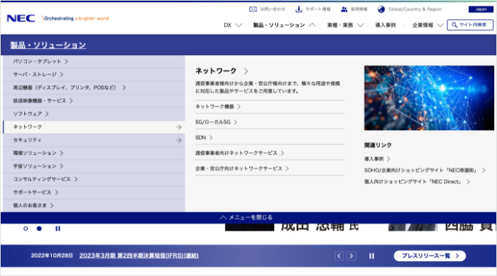

◆ITコーポレートサイト
NECのコーポレートサイトを自分なりに改善してみました。
Problem
主な問題点
- デザインが古く、最先端の技術を提供
できる企業イメージと合わない -
情報がごちゃごちゃで分かりにくく、
構造をすぐに理解できない
Solution
改善案
- 近未来感かつ信頼感のあるデザイン
- シンプルで分かりやすい構造
-
トップページは新規顧客や求職者向け
に事業内容や企業の魅力を伝える -
ナビは既存客や目的がある人向けに
求める情報にすぐ辿り着けるように

Before
- ヘッダーを指が届きやすい右下に大きく配置
- 検索、お気に入り、かご、メニューをわかりやすく
- メインビジュアルを大きく魅力的に
- TOPICの表示が多すぎるので削減
- 全体的に余白を増やし、洗練されたデザインに
-
各コンテンツのタイトルを英語と日本で表示し、
オシャレさとわかりやすさを両立 -
フォントはブランドらしい上品で洗練された
細めのゴシック体を使用 - 商品見せるためNEWとRANKINGの順番を上に
- 商品写真を大きく、スライド表示に
-
ページ最下部のブランド一覧がロゴだけで押して
みようと思えないので、順番を上に変更し、
魅力的な写真でブランドページへ誘導
After
- ヘッダーを指が届きやすい右下に大きく配置
- 検索、お気に入り、かご、メニューをわかりやすく
- メインビジュアルを大きく魅力的に
- TOPICの表示が多すぎるので削減
- 全体的に余白を増やし、洗練されたデザインに
-
各コンテンツのタイトルを英語と日本で表示し、
オシャレさとわかりやすさを両立 -
フォントはブランドらしい上品で洗練された
細めのゴシック体を使用 - 商品見せるためNEWとRANKINGの順番を上に
- 商品写真を大きく、スライド表示に
-
ページ最下部のブランド一覧がロゴだけで押して
みようと思えないので、順番を上に変更し、
魅力的な写真でブランドページへ誘導